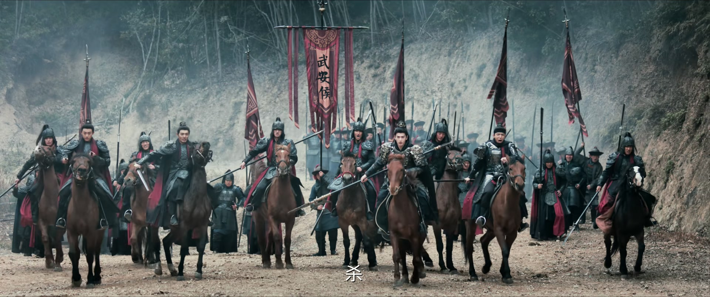
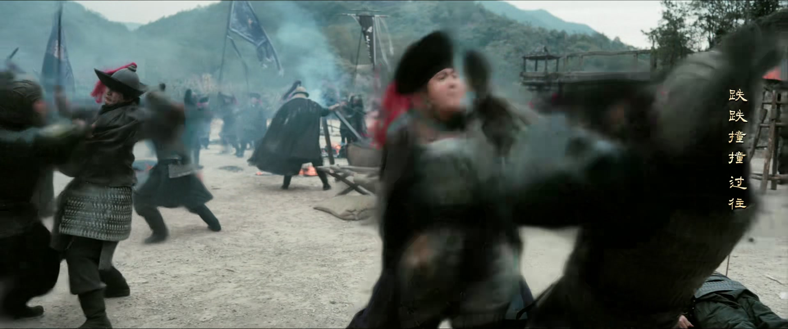
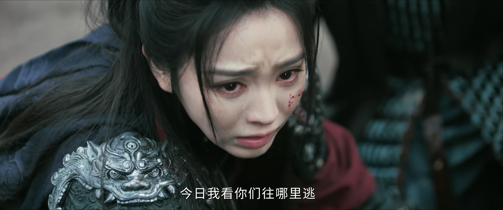
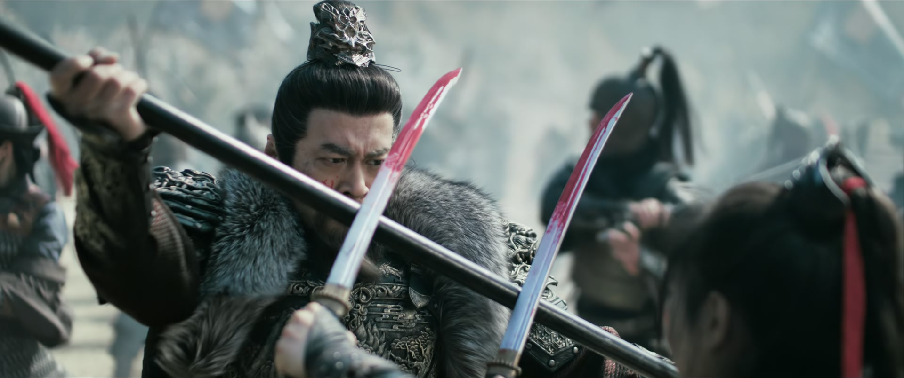
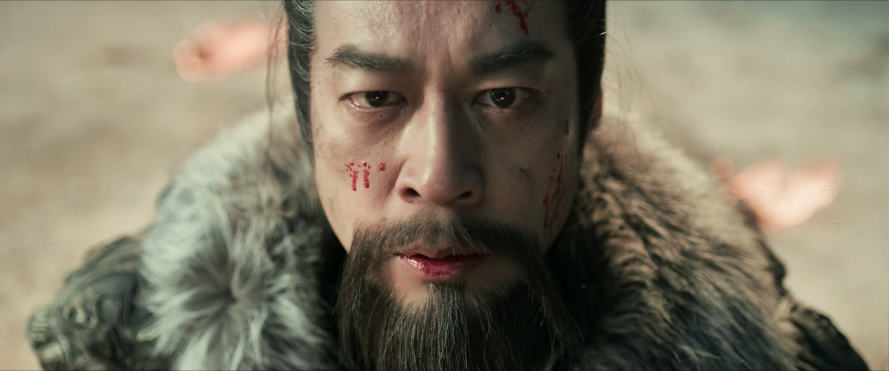
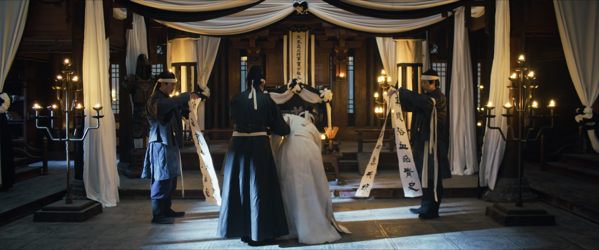

露在明处的底牌，就是别人拿捏你的把柄
情境：长玉的刀法被长信王一眼看破师承来历，身份险些被揭穿，自己也身陷险境。
遇到这种情况，可以这样做
- 技艺再精，也别让底牌全亮在明处。
- 被人识破时别慌，留一手才有翻盘的本钱。
- 真正的杀招，永远在别人料想不到的地方。

Drama Recap · 剧情图文总结
第 30 集 · 童谣惊变
卢城一战，樊长玉手刃长信王、名动天下；可街头一支童谣，却让她发现自己的生父竟是人人口中的「大奸臣魏祁林」——十七年前瑾州惨案的真相，开始从灰烬里浮出
长信王兵围卢城，谢征率军死战。长玉被俘，长信王从她的刀法里认出了贺敬元的旧影，也牵出一个尘封十七年的名字——大奸臣魏祁林。乱战中长玉手刃贼王，一战成名，却在胜利的号角里痛失恩师；孩童们的一句童谣，又把她推到所有人面前：那个杀猪的爹爹，原来是人人唾骂的「大奸臣」。家族惨案的真相，正从一条童谣开始揭开。
第 30 集，卢城之战。 长信王率崇州军主力大举攻城，谢征与众将分兵死守，护送李怀安先行转移，亲率铁骑直捣敌后。乱军之中，长玉策马追上，夫妻并肩杀阵。长信王亲自压阵，讥谢征为「谢家小儿」，扬言崇州兵已攻进卢城，今日要他们插翅难逃。
剧里的鸡毛蒜皮，往往是人生的缩影。这些情节不只是故事——当你在现实中遇到同样的处境时，它们能提醒你：先做什么、别做什么、怎么说才有效。
情境：长玉的刀法被长信王一眼看破师承来历，身份险些被揭穿，自己也身陷险境。
情境：长玉被长信王擒住，宁死不降，一句「杀了我，给个痛快的」。
情境：齐姝贵为长公主，上了战场才明白「长公主算得上什么」，而长玉斩杀贼王是亲手挣来的荣耀。
情境：贺敬元战死，长玉自责「若我早些杀了长信王」，言正劝她：何将军之死，非你之过。
情境：满街童谣骂父亲是「大奸臣」，长玉却记得娘的性子，「怎么会原谅他」——她选择去查真相。
情境：战场的生离死别让长玉明白：「妇人之仁，只会让更多人陷入绝境。」

长信王率崇州军主力大举攻城，卢城告急。谢征传令：「众将士听令！随我直捣敌军后方！」李怀安要登城死战，被众人拦下：「李大人，都这时候了，就不要与他们硬拼了。」亲随卓然奉命护送李怀安转移，谢征亲率铁骑迎战，长信王损失惨重，仍不下令退兵。
乱军之中，长玉策马赶了上来。言正回身：「我就知道你会来。带到我后面，跟紧了！」长玉不肯躲：「我可不会躲在你后面！」夫妻并肩冲入敌阵。长信王亲自压阵逼近，言正只来得及叮嘱一句：「我先去拦长信王，你自己小心。」
关键台词 · KEY QUOTES

长信王追上谢征，冷笑：「谢家小儿，真以为你能赢吗？看看我身后的狼烟，崇州兵已经攻进卢城了，今日我看你们往哪里逃！」话音未落，长玉单骑拦在他马前，一声断喝：「杀你这个造反老头，我一人便够了！」
长信王先是一愣，随即大笑：「狂妄小儿！老夫当年领军杀敌的时候，你还在玩泥巴呢！」可几回合过招，他见这姑娘悍勇无惧，竟起了爱才之心：「好小子，跟着谢家小儿真是埋没你了，不如以后跟着本王吧。」
关键台词 · KEY QUOTES

长信王一边与长玉过招，一边点破她的路数：「你善用短刃，招式却有势大力沉之势。少用蛮劲，顺势而为，多用巧劲。」又敲打她：「战场上，敌人的招数瞬息万变，怎么能被人识破招数，乱了自己的阵脚？」
长玉终是寡不敌众，被长信王压制。她宁死不降：「你以为这些小伎俩能赢得了我？杀了我，给个痛快的！」长信王冷笑，一挥手：「绑了，带回去！」长玉被生擒回营。
关键台词 · KEY QUOTES

大帐之中，长信王审问被缚的长玉：「贺敬元是你何人？」长玉答：「是我的济州军主帅。」长信王眯起眼睛：「你这套刀法，当年是梁虎将军所传。魏祁林死后，只有贺敬元还会这套刀法——你是怎么得到他的真传的？」
他步步紧逼：「你认识贺将军的结义兄弟、大奸臣魏祁林吗？谁人不知，谁人不识。」长玉心头一凛。长信王冷笑：「本王拿了你，就不信贺敬元还能沉得住气。」他要留长玉当饵，钓出贺敬元。看着眼前倔强的小娘子，他啧啧称奇：「好好的小娘子，怎么生成了这样？」
关键台词 · KEY QUOTES
贺敬元发兵相救，乱战之中，长玉挣脱桎梏，于阵前手刃长信王，自己也负了重伤。战后她躺在帐中养伤，齐姝前来探望，坦言：「我不是有意隐瞒身份的，你可是生气了？」长玉道：「早在军营的时候，我就知道你身份不简单，但万万没想到，你是堂堂尊贵的长公主，还为我治病。」
齐姝感慨，她原以为能做出卫国和亲，便已是此生最大的牺牲，可上了战场才知道，「长公主算得上什么？斩杀贼王，是你亲手挣来的荣耀」。长玉郑重一拜：「这一礼，一为长公主，二为齐姝。」望着齐姝的背影，长玉想起战场的尸山血海——妇人之仁，只会让更多人陷入绝境。
关键台词 · KEY QUOTES
城楼之上，济州军主帅贺敬元战死。将士们高呼：「将军，我们赢了！」长玉怔在原地，喃喃自责：「若我早些杀了长信王，何将军也不会……」话音未落，悲痛过度的她昏厥过去。言正将她拥入怀中，低声宽慰：「何将军之死，非你之过。他跟你一样，都是为了守护一方土地。」
李怀安来见，长玉一肚子火没处发：「我宁可当时就死在城外，也不愿有人把我一把打晕，然后所有人都告诉我，战争已经结束了，连给师父报仇，都再无可能。」李怀安垂首认下：「你当时伤得太重了，是我把你打晕的。」他说，他此番前来，是为完成老师贺敬元的遗愿。
关键台词 · KEY QUOTES
贺敬元的遗愿，牵出十七年前的一段旧事。李怀安转交来一封贺敬元保存的旧信——那是魏祁林的绝笔。信中，他长揖到地：「贺兄相借，胜十万雄兵。某蒙贺兄相助，苟且偷生至今，只愿还瑾州十万冤魂一个真相。」
信末字字泣血：「如今相爷对我下了追杀令，我既不能苟活，亦不愿为难贺兄。恳请贺兄，替我护住樊家这一对姐妹的性命。」——写下这封信的人，才是长玉的生父。长玉握着信纸，指尖冰凉：她姓樊，是樊家女，可这封信告诉她，一切都不是她以为的样子。
关键台词 · KEY QUOTES
街上，孩童们拍着手唱童谣：「大奸臣魏祁林，押粮草，不忠心，断送十万军！」长玉如遭雷击：「我爹是魏祁林？大奸臣魏祁林？不会的，不会的……」她失魂落魄地后退，喃喃道：「我爹要是真是误国害人的大奸臣，以我娘的性子，怎么会原谅他？可到底发生了什么事啊。」
妹妹长宁红着眼眶扑进她怀里：「娘亲，我以后再也不玩大奸臣的游戏了。」长宁一直以为那只是一首儿歌。长玉把妹妹紧紧抱住，望着满街嬉闹的孩子，低声道：「这世上的人，又有几个能真正明辨是非？」流言如刀，一刀一刀剜在她心上。
关键台词 · KEY QUOTES
长玉向言正打听十七年前的瑾州之战。言正道：「十七年前，我父亲与北狄军连战数月，却因粮草告罄、援兵未到，将士们无力抵抗而失守，北狄长驱直入，数十万军民如草芥。」长玉追问魏祁林其人，言正道：「魏祁林当年是魏严最倚重的干将，也曾与家父并肩作战，是一时英雄。可后来，却成了人人唾骂的大罪臣。」
长玉几乎要说出樊老爹的名字，终究咽了回去，只问：「何将军的丧事，何时举行？」言正答：「六月之后，何将军的头七和家父的祭典正好同一天。说来像是命定一般，十七年前的今日，家父战死于军中，每年此时，谢家将军都会回来祭拜。」长玉轻声道：「那到时候，我也想为谢将军上柱香，可以吗？」言正点头：「好。」
关键台词 · KEY QUOTES

贺敬元临终前，把大印和樊家姐妹一并托付给得意门生文凯——也就是李怀安。如今，这份军权落在李怀安手里，朝中两派闻风而动。仆人相继来报：「李大人，这是卫相送来的晚宴。」「李大人，这是李太傅送来的晚宴。」
左右问他：「大人，您决定赴哪一宴？」李怀安看着两张烫金请帖，沉声道：「这一去，便是决定要帮太傅对付卫相了。」贺敬元留下的这方大印，成了朝堂权柄天平上最重的一颗砝码。
关键台词 · KEY QUOTES
卢城一败，长信王世子随元青逃到舅父家养伤。表妹端来汤药，双手却抖个不停。随元青盯着她：「你怎么抖得这么厉害？怕我吗？」表妹终于绷不住：「表哥，你快逃吧。父亲要把你交出去，拿你的人头去领赏。我对不住你，我不想害你！」随元青拱手：「多谢表妹告知。」
当夜，舅父带人来擒他，反被随元青反手屠尽刘家满门。表妹失魂落魄地追出来，跪在地上求他：「小哥，你带我走吧，我的家人都死了，我不知道该去哪儿了……」随元青面无表情：「我杀你全家，你还要跟着我？」表妹只是哭。他望着这朵只会攀附的「香花」，心里却浮现出另一朵花——自生自长、浑身带刺，叫人又爱又恨。
关键台词 · KEY QUOTES
王府书房。下人进来禀报：「主子，昨夜世子屠了刘家满门。」长信王妃头也不抬：「屠了就屠了，没什么大惊小怪的。他人呢？」书房里，世子随元青与兄长随元淮相对而立，为兵败卢城、父王身死而咬牙切齿。
王妃缓缓开口：「在我心里，你就是这世上最厉害之人，谢征不过是侥幸赢了几仗。」她话锋一转：「你可知，杀父王之人是谁？不是谢征，是樊长玉！」随元青猛地攥紧拳头：「樊长玉……又是她，又是这个杀父仇人！」他当场立誓复仇。王妃抚着他的肩：「母妃有我一路照顾，你只管去杀樊长玉，以告父王在天之灵。」
关键台词 · KEY QUOTES
卢城一战于阵前手刃长信王，一战成名却身负重伤；醒来得知恩师贺敬元战死，悲痛欲绝；从魏祁林绝笔信与街头童谣中惊觉生父竟是「大奸臣」，从此踏上查证真相之路。
率军死守卢城，与长玉并肩杀敌；贺敬元战死后拥着长玉宽慰「非你之过」；向她讲述十七年前瑾州之战与魏祁林旧事，并约定六月同祭谢父。
隐瞒身份混迹军中为长玉治伤，战后坦白身份；赞她斩杀贼王是「亲手挣来的荣耀」，长玉郑重还礼——「这一礼，一为长公主，二为齐姝。」
战场上把重伤的长玉打晕、救她一命；受老师临终所托，接下大印与樊家姐妹的安危；朝堂上被卫相与李太傅争相拉拢，进退两难。
长信王以长玉为饵欲钓他现身，他发兵相救；战死卢城城楼，临终把大印与樊家姐妹托付得意门生文凯——他的死，成了长玉心中最大的遗憾。
兵围卢城，一眼看破长玉刀法来历，欲收她入麾下；最终在乱军中被樊长玉手刃，死讯震动朝野，也埋下世子复仇的祸根。
卢城兵败后藏身舅家养伤，反手屠尽出卖他的舅父满门；与王妃、兄长密谋得知杀父真凶是樊长玉，当场立誓手刃仇人。
乱军之中言正一句「我就知道你会来」，长玉一句「我可不会躲在你后面」，并肩冲锋的默契，比任何情话都动人。
「杀你这个造反老头，我一人便够了！」长玉单骑拦住不可一世的长信王，屠户女的悍勇让叛王又惊又惜。
长玉于乱军之中手刃长信王，齐姝郑重一拜：「这一礼，一为长公主，二为齐姝。」荣耀与身世，在这一拜里百感交集。
「大奸臣魏祁林，押粮草，不忠心，断送十万军！」孩童的童谣灌进耳朵，长玉的世界轰然崩塌——那个杀猪的爹爹，是人人唾骂的大奸臣。
「我宁可当时就死在城外，也不愿有人把我一把打晕……连给师父报仇，都再无可能。」长玉对李怀安吼出的这句遗恨，扎得人心口发疼。
长玉发现生父是「大奸臣」魏祁林，谢征却说魏祁林当年与谢父并肩作战、是一时英雄——十七年前瑾州惨案断送粮草的真凶另有其人，魏严的獠牙正藏在暗处。
长玉与言正约好六月为谢将军上香，谢家将军们届时将齐聚祭拜——那场祭典，必是揭开瑾州旧案、各方摊牌的关键时刻。
随元青得知杀父真凶是樊长玉，誓要手刃仇人——斩杀贼王的荣耀，也为长玉埋下了杀身之祸。
卫相与李太傅争相设宴拉拢掌印的李怀安，贺敬元留下的大印成了权谋棋盘上最重的一颗子。
绝笔信只写「恳请护住樊家姐妹」，却未道尽十七年前的真相——魏祁林因何被诬？他口中的「真相」，还等着长玉亲手去挖。